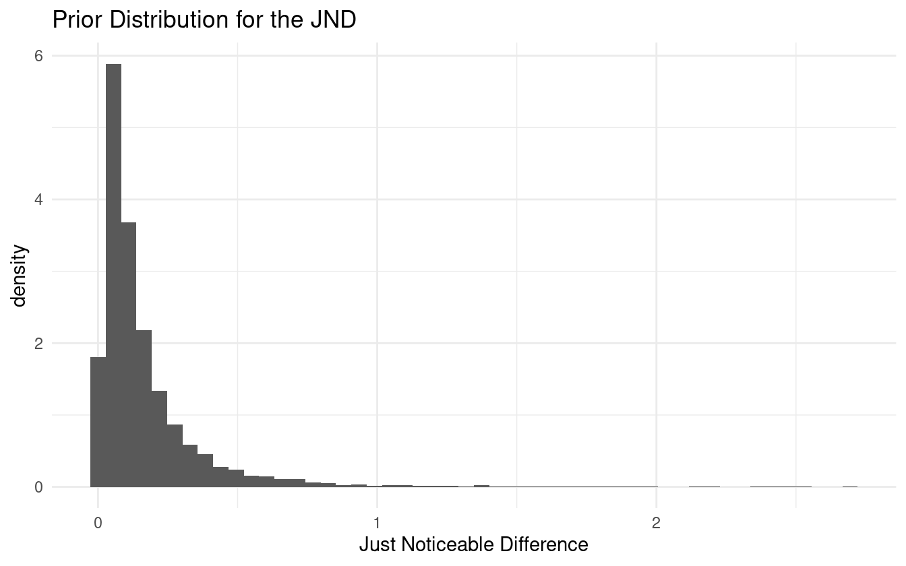

4 Methodological Contributions via the Workflow
Now we apply the workflow to our data set, seeking to build a model that satisfies the four criteria in chapter 2. During model refinement, we’ll pick up on the regular features while assessing the statistical significance of covariates through predictive comparison. In our final model, we’ll model well-known data quality issues (from participant lapses in judgment) and show that this improves model prediction.
As we iterate through our model development workflow, we have a preference for multilevel models (for the reasons discussed in chapter 2). Hierarchical models are a specific kind of multilevel model where one or more groups are nested within a larger one. In the case of the psychometric data, there are three age groups, and within each age group are individual subjects.
4.1 Modeling psychometric quantities
Before formally conducting the workflow, we motivate our choice of using the logistic function to model the psychometric function as well as our choice for the parameterization of the linear predictor. Three common sigmoid functions are displayed in figure 4.1.
Figure 4.1: Assortment of psychometric functions.
The Weibull psychometric function is more common when it comes to 2-alternative forced choice (2-AFC) psychometric experiments where the independent variable is a stimulus intensity (non-negative) and the goal is signal detection. The data in this paper includes both positive and negative SOA values, so the Weibull is not a natural choice. Our first choice is the logistic function as it is the canonical choice for Binomial count data. The data in this study are exchangeable, meaning that the label of a positive response can be swapped with the label of a negative response and the inferences would remain the same. Since there is no natural ordering, it makes more sense for the psychometric function to be symmetric, e.g. the logistic function and Gaussian CDF. We use symmetric loosely to mean that the probability density function (PDF) has zero skewness. In practice, there is little difference in inferences between the logit and probit links, but computationally the logit link is more efficient.
It is appropriate to provide additional background to GLMs and their role in working with psychometric functions. A GLM allows the linear model to be related to the outcome variable via a link function. An example of this is the logit link – the inverse of the logistic function. The logistic function, \(F\), takes \(x \in \mathbb{R}\) and constrains the output to be in \((0, 1)\).
\[\begin{equation} F(\theta) = \frac{1}{1 + \exp\left(-\theta\right)} \tag{4.1} \end{equation}\]
Since \(F\) is a strictly increasing and continuous function, it has an inverse, and the link for (4.1) is the log-odds or logit function.
\[\begin{equation} F^{-1}(\pi) = \mathrm{logit}(\pi) = \ln\left(\frac{\pi}{1 - \pi}\right) \tag{4.2} \end{equation}\]
By taking \((F^{-1} \circ F)(\theta)\) we can arrive at a relationship that is linear in \(\theta\).
\[\begin{align*} \pi = F(\theta) \Longleftrightarrow F^{-1}(\pi) &= F^{-1}(F(\theta)) \\ & = \ln\left(\frac{F(\theta)}{1 - F(\theta)}\right) \\ &= \ln(F(\theta)) - \ln(1 - F(\theta)) \\ &= \ln\left(\frac{1}{1 + \exp(-\theta)}\right) - \ln\left(\frac{\exp(-\theta)}{1 + \exp(-\theta)}\right) \\ &= - \ln(1 + \exp(-\theta)) - \ln(\exp(-\theta)) + \ln(1 + \exp(-\theta)) \\ &= - \ln(\exp(-\theta)) \\ &= \theta \end{align*}\]
The motivation for this background is to show that a model for the psychometric function can be specified using a linear predictor, \(\theta\). Given a simple slope-intercept model, the linear predictor would typically be written as:
\[\begin{equation} \theta = \alpha + \beta x \tag{4.3} \end{equation}\]
This isn’t the only possible form; it could be written in the slope-location parameterization:
\[\begin{equation} \theta = \beta(x - a) \tag{4.4} \end{equation}\]
Both parameterizations will describe the same geometry, so why should it matter which form is chosen? The interpretation of the parameters change between the two models, but the reason becomes clear when we consider how the linear model relates back to the physical properties that the psychometric model describes. Take equation (4.3), substitute it in to (4.1), and then take the logit of both sides:
\[\begin{equation} \mathrm{logit}(\pi) = \alpha+\beta x \tag{4.5} \end{equation}\]
Now recall that the PSS is defined as the SOA value such that the response probability, \(\pi\), is \(0.5\). Substituting \(\pi = 0.5\) into (4.5) and solving for \(x\) yields:
\[pss = -\frac{\alpha}{\beta}\]
Similarly, the JND is defined as the difference between the SOA value at the 84% level and the PSS. Substituting \(\pi = 0.84\) into (4.5), solving for \(x\), and subtracting off the pss yields:
\[\begin{equation} jnd = \frac{\mathrm{logit}(0.84)}{\beta} \tag{4.6} \end{equation}\]
From the conceptual analysis, it is easy to define priors for the PSS and JND, but then how does one set the priors for \(\alpha\) and \(\beta\)? Let’s say the prior for the just noticeable difference is \(jnd \sim \pi_j\). Then the prior for \(\beta\) would be
\[\beta \sim \frac{\mathrm{logit}(0.84)}{\pi_j}\]
The log-normal distribution has a nice property where its multiplicative inverse is still a log-normal distribution. If we let \(\pi_j = \mathrm{Lognormal}(\mu, \sigma^2)\), then \(\beta\) would be distributed as
\[ \beta \sim \mathrm{Lognormal}(-\mu + \ln(\mathrm{logit}(0.84)), \sigma^2) \]
This is acceptable as the slope must always be positive for this psychometric data, and a log-normal distribution constrains the support to positive real numbers. Next suppose that the prior distribution for the PSS is \(pss \sim \pi_p\). Then the prior for \(\alpha\) is:
\[\alpha \sim -\pi_p \cdot \beta\]
If \(\pi_p\) is set to a log-normal distribution as well, then \(\pi_p \cdot \beta\) would also be log-normal, but there is still the problem of the negative sign. If \(\alpha\) is always negative, then the PSS will also always be negative, which is certainly not always true. Furthermore, we don’t want to a priori put more weight on positive PSS values compared to negative ones.
Let’s now consider using equation (4.4) and repeat the above process.
\[\begin{equation} \mathrm{logit}(\pi) = \beta(x - a) \tag{4.7} \end{equation}\]
The just noticeable difference is still given by (4.6), and so the same method for choosing a prior can be used. However, the PSS is now given by:
\[pss = \alpha\]
This is a fortunate consequence of using (4.4) because now the JND only depends on \(\beta\) and the PSS only depends on \(\alpha\). Additionally \(\alpha\) can be interpreted as the PSS of the estimated psychometric function. Also thrown in is the ability to set a prior for \(\alpha\) that is symmetric around \(0\) such as a Gaussian distribution.
This also highlights the benefit of using a modeling language like Stan over others. For fitting GLMs in R, one can use stats::glm which utilizes MLE, or others such as rstanarm::stan_glm and arm::bayesglm that use Bayesian methods (Gabry and Goodrich 2020; Gelman and Su 2020). Each of these functions requires the linear predictor to be in the form of (4.3). The stan_glm function uses Stan in the back-end to fit a model, but is limited to priors from the Student-t family of distributions. By writing the model directly in Stan, the linear model can be parameterized in any way and with any prior distribution, and so allows for much more expressive modeling.
With the consideration for the choice of sigmoid function and linear parameterization complete, we begin to develop a multilevel model for the psychometric function.
4.2 Iteration 1: base model
Pre-Model, Pre-Data
Conceptual Analysis
In section 3.2 we discussed the experimental setup and data collection. Subjects are presented with two stimuli separated by some temporal delay, and they are asked to respond as to their perception of the temporal order. There are 45 subjects with 15 each in the young, middle, and older age groups. As the SOA becomes larger in the positive direction, subjects are expected to give more “positive” responses, and as the SOA becomes larger in the negative direction, more “negative” responses are expected. By the way the experiment and responses are constructed, there is no expectation to see a reversal of this trend unless there was an issue with the subject’s understanding of the directions given to them or an error in the recording process.
After the first experimental block the subjects go through a temporal recalibration period, and repeat the experiment. The interest is in seeing if the recalibration has an effect on temporal sensitivity and perceptual synchrony, and if the effect is different for each age group.
Define Observational Space
The response that subjects give during a TOJ task is recorded as a zero or a one, and their relative performance is determined by the SOA value. Let \(y\) represent the binary outcome of a trial and let \(x\) be the SOA value.
\[\begin{align*} y_i &\in \lbrace 0, 1\rbrace \\ x_i &\in \mathbb{R} \end{align*}\]
If the SOA values are fixed as in the audiovisual task, then the responses can be aggregated into Binomial counts, \(k\).
\[k_i, n_i \in \mathbb{Z}_0^+, k_i \le n_i\]
In the above expression, \(\mathbb{Z}_0^+\) represents the set of non-negative integers. Notice that the number of trials \(n\) has an index variable \(i\). This is because the number of trials per SOA is not fixed between blocks. In the pre-adaptation block, there are five trials per SOA compared to three in the post-adaptation block. So if observation \(32\) is recorded during a “pre” block, \(n_{32} = 5\), and if observation \(1156\) is during a “post” block, \(n_{1156} = 3\).
Then there are three categorical variables: age group, subject ID, and trial (block). The first two are treated as factor variables (also known as index variable or categorical variable). Rather than using one-hot encoding or dummy variables, the age levels are left as categories, and a coefficient is fit for each level. If dummy variables were used for all 45 subjects, there would be 44 dummy variables to work with times the number of coefficients that make estimates at the subject level. The number of parameters in the model grows rapidly as the model complexity grows.
Age groups and individual subjects can be indexed in the same way that the number of trials is indexed. \(S_i\) refers to the subject in record \(i\), and similarly \(G_i\) refers to the age group of that subject. Observation \(63\) is for record ID av-post1-M-f-HG, so then \(S_{63}\) is M-f-HG and \(G_{63}\) is middle_age. Under the hood of R, these factor levels are represented as integers (e.g. middle age group level is stored internally as the number 2).
(x <- factor(c("a", "a", "b", "c")))
#> [1] a a b c
#> Levels: a b c
storage.mode(x)
#> [1] "integer"This data storage representation can later be exploited for the Stan model.
The pre- and post-adaptation categories are treated as a binary indicator referred to as \(trt\) (short for treatment) since there are only two levels in the category. In this setup, a value of \(1\) indicates a post-adaptation block. This encoding is chosen over the reverse because the pre-adaptation block is like the baseline performance, and it is more appropriate to interpret the post-adaptation block as turning on some effect. Using a binary indicator in a regression setting may not be the best practice as we discuss in section 4.3.
Construct Summary Statistics
A set of summary statistics are constructed that help answer the questions of domain expertise consistency and model adequacy. We are studying the affects of age and temporal recalibration through the PSS and JND (see section 3.1), so it is natural to define summary statistics around these quantities to verify model consistency.
It is impossible that a properly conducted block would result in a JND less than 0 (the psychometric function is always non-decreasing), so that can be a lower limit for its threshold. It is also unlikely that the just noticeable difference would be more than a second. Some studies show that we cannot perceive time differences below 30 ms, and others show that an input lag as small as 100ms can impair a person’s typing ability. A time delay of 100ms is enough to notice, and so a just noticeable difference should be much less than one second – much closer to 100ms. We will continue to use one second as an extreme estimate indicator, but will incorporate this knowledge when it comes to selecting priors.
The point of subjective simultaneity can be either positive or negative, with the belief that larger values are less likely. Some studies suggest that for audio-visual temporal order judgment tasks, the separation between stimuli need to be as little as 20ms for subjects to be able to determine which modality came first (Vatakis et al. 2007). Other studies suggest that our brains can detect temporal differences as small as 30ms. If these values are to be believed then we should be skeptical of PSS estimates larger than say 150ms in absolute value, just to be safe.
A histogram of computed PSS and JND values will suffice for summary statistics. We can estimate the proportion of values that fall outside of our limits defined above, and use them as indications of problems with the model fitting or conceptual understanding.
Post-Model, Pre-Data
Develop Model
We begin with the simplest model that captures the structure of the data without including information about age group, treatment, or subject. Here is a simple model that draws information from the conceptual analysis:
\[\begin{align*} k_i &\sim \mathrm{Binomial}(n_i, p_i) \\ \mathrm{logit}(p_i) &= \beta ( x_i - \alpha ) \end{align*}\]
Recall that we are using the linear model from (4.4). The PSS can be positive or negative without any expected bias towards either, so a symmetric distribution such as the Gaussian is a reasonable choice for \(\alpha\). We determined earlier that a PSS value more than 150ms in absolute value is unlikely, so we can define a Gaussian prior such that \(P(|pss| > 0.150) \approx 0.01\). Since the prior does not need to be exact, the following mean and variance suffice:
\[ pss \sim \mathcal{N}(0, 0.06^2) \Longleftrightarrow \alpha \sim \mathcal{N}(0, 0.06^2) \]
For the just noticeable difference, we continue to use the log-normal distribution because it is constrained to positive values and has the reciprocal property. The JND is expected to be close to 100ms and unlikely to exceed \(1\) second. This implies a prior such that the mean is around 100ms and the bulk of the distribution is below 1 second. I.e. \(E[X] \approx 0.100\) and \(P(X < 1) \approx 0.99\). This requires solving a system of nonlinear equations in two variables:
\[ \begin{cases} 0.100 &= \exp\left(\mu + \sigma^2 / 2\right) \\ 0.99 &= 0.5 + 0.5 \cdot \mathrm{erf}\left[\frac{\ln (1) - \mu}{\sqrt{2} \cdot \sigma}\right] \end{cases} \]
This nonlinear system can be solved using Stan’s algebraic solver (code provided in the appendix).
fit <- sampling(prior_jnd,
iter=1, warmup=0, chains=1, refresh=0,
seed=31, algorithm="Fixed_param")
sol <- extract(fit)
sol$y
#>
#> iterations [,1] [,2]
#> [1,] -7.501 3.225The solver has determined that \(\mathrm{Lognormal}(-7.5, 3.2^2)\) is the appropriate prior. However, simulating some values from this distribution produces a lot of extremely small values (\(<10^{-5}\)) and a few extremely large values (\(\approx 10^2\)). This is because the expected value of a log-normal random variable depends on both the mean and standard deviation. If the median is used in place for the mean, then a more acceptable prior may be determined.
fit <- sampling(prior_jnd_using_median,
iter=1, warmup=0, chains=1, refresh=0,
seed=31, algorithm="Fixed_param")
sol <- extract(fit)
sol$y
#>
#> iterations [,1] [,2]
#> [1,] -2.303 0.9898Sampling from a log-normal distribution with these parameters and plotting the histogram shows no inconsistency with the domain expertise.

With a prior for the JND, the prior for \(\beta\) can be determined:
\[ jnd \sim \mathrm{Lognormal}(-2.3, 0.99^2) \Longleftrightarrow \frac{1}{jnd} \sim \mathrm{Lognormal}(2.3, 0.99^2) \]
and
\[ \beta = \frac{\mathrm{logit}(0.84)}{jnd} \sim \mathrm{Lognormal}(2.8, 0.99^2) \]
The priors do not need to be too exact. Rounding the parameters for \(\beta\), the simple model is:
\[\begin{align*} k_i &\sim \mathrm{Binomial}(n_i, p_i) \\ \mathrm{logit}(p_i) &= \beta ( x_i - \alpha ) \\ \alpha &\sim \mathcal{N}(0, 0.06^2) \\ \beta &\sim \mathrm{Lognormal}(3, 1^2) \end{align*}\]
and in Stan, the model code is:
data {
int N;
int n[N];
int k[N];
vector[N] x;
}
parameters {
real alpha;
real<lower=0> beta;
}
model {
vector[N] p = beta * (x - alpha);
alpha ~ normal(0, 0.06);
beta ~ lognormal(3.0, 1.0);
k ~ binomial_logit(n, p);
}
generated quantities {
vector[N] log_lik;
vector[N] k_pred;
vector[N] theta = beta * (x - alpha);
vector[N] p = inv_logit(theta);
for (i in 1:N) {
log_lik[i] = binomial_logit_lpmf(k[i] | n[i], theta[i]);
k_pred[i] = binomial_rng(n[i], p[i]);
}
}Notice that the model block is nearly identical to the mathematical model specified above.
Construct Summary Functions
The next step is to construct any relevant summary functions. Since the distribution of posterior PSS and JND values are needed for the summary statistics, it will be convenient to have a function that can take in the posterior samples for \(\alpha\) and \(\beta\) and return the PSS and JND values. We define \(Q\) as a more general function that takes in the two parameters and a target probability, \(\pi\), and returns the distribution of SOA values at \(\pi\).
\[\begin{equation} Q(\pi; \alpha, \beta) = \frac{\mathrm{logit(\pi)}}{\beta} + \alpha \tag{4.8} \end{equation}\]
The function can be defined in R as
With \(Q\), the PSS and JND can be calculated as
\[\begin{align*} pss &= Q(0.5) \\ jnd &= Q(0.84) - Q(0.5) \end{align*}\]
Simulate Bayesian Ensemble
During this step, we simulate the Bayesian model and later feed the prior values into the summary functions in order to verify that there are no inconsistencies with domain knowledge. Since the model is fairly simple, we simulate directly in R.
set.seed(124)
n <- 10000
a <- rnorm(n, 0, 0.06)
b <- rlnorm(n, 3.0, 1)
dat <- with(av_dat, list(N = N, x = x, n = n))
n_obs <- length(dat$x)
idx <- sample(1:n, n_obs, replace = TRUE)
probs <- logistic(b[idx] * (dat$x - a[idx]))
sim_k <- rbinom(n_obs, dat$n, probs)Prior Checks
This step pertains to ensuring that prior estimates are consistent with domain expertise. We already did that in the model construction step by sampling values for the just noticeable difference. The first prior chosen was not producing JND estimates that were consistent with domain knowledge, so we adjusted accordingly.
Figure 4.2 shows the distribution of prior psychometric functions derived from the simulated ensemble. There are a few very steep and very shallow curves, but the majority fall within a range that appears likely.
Figure 4.2: Prior distribution of psychometric functions using the priors for alpha and beta.
Additionally most of the PSS values are within \(\pm 0.1\) with room to allow for some larger values. Let’s check the prior distribution of PSS and JND values.
Figure 4.3: PSS prior distribution.
Figure 4.4: JND prior distribution.
We are satisfied with the prior coverage of the PSS and JND values, and there are only a few samples that go beyond the extremes that were specified in the summary statistics step.
Configure Algorithm
There are a few parameters that can be set for Stan. On the user side, the main parameters are the number of iterations, the number of warm-up iterations, the target acceptance rate, and the number of chains to run. By default, Stan will use half the number of iterations for warm-up and the other half for actual sampling. For now we use the default algorithm parameters in Stan, and will tweak them later if and when issues arise.
Fit Simulated Ensemble
We now fit the model to the simulated data.
sim_dat <- with(av_dat, list(N = N, x = x, n = n, k = sim_k))
m041 <- rstan::sampling(m041_stan, data = sim_dat,
chains = 4, cores = 4, refresh = 0)Algorithmic Calibration
To check the basic diagnostics of the model, we run the following code.
check_hmc_diagnostics(m041)
#>
#> Divergences:
#> 0 of 4000 iterations ended with a divergence.
#>
#> Tree depth:
#> 0 of 4000 iterations saturated the maximum tree depth of 10.
#>
#> Energy:
#> E-BFMI indicated no pathological behavior.There is no undesirable behavior from this model, so next we check the summary statistics of the estimated parameters.
| parameter | mean | se_mean | sd | 2.5% | 97.5% | n_eff | Rhat |
|---|---|---|---|---|---|---|---|
| alpha | 0.0061 | 0.0001 | 0.0038 | -0.0012 | 0.0136 | 4039 | 0.9995 |
| beta | 10.7681 | 0.0051 | 0.2404 | 10.3043 | 11.2313 | 2202 | 1.0003 |
Both the \(\hat{R}\) and \(N_{\mathrm{eff}}\) look fine for both \(\alpha\) and \(\beta\), though it is slightly concerning that \(\alpha\) is centered relatively far from zero. This could just be due to sampling variance, so we will continue on to the next step.
Post-Model, Post-Data
Fit Observed Data
All of the work up until now has been done without peaking at the observed data. We go ahead and run the data through the model.
Diagnose Posterior Fit
Here we repeat the diagnostic checks that were used after fitting the simulated data.
check_hmc_diagnostics(m041)
#>
#> Divergences:
#> 0 of 4000 iterations ended with a divergence.
#>
#> Tree depth:
#> 0 of 4000 iterations saturated the maximum tree depth of 10.
#>
#> Energy:
#> E-BFMI indicated no pathological behavior.| parameter | mean | se_mean | sd | 2.5% | 97.5% | n_eff | Rhat |
|---|---|---|---|---|---|---|---|
| alpha | 0.0373 | 0.0001 | 0.0043 | 0.029 | 0.0458 | 3765 | 1.000 |
| beta | 8.4259 | 0.0039 | 0.1839 | 8.070 | 8.7897 | 2249 | 1.001 |
There are no indications of an ill-behaved posterior fit. Let’s also check the posterior distribution of \(\alpha\) and \(\beta\) against the prior density (4.5).
Figure 4.5: Comparison of posterior distributions for alpha and beta to their respective prior distributions.
The posterior distributions for \(\alpha\) and \(\beta\) are well within the range determined by domain knowledge, and highly concentrated due to both the large amount of data and the fact that this is a completely pooled model – all subject data is used to estimate the parameters. As expected, the prior for the JND could have been tighter with more weight below half a second compared to the one second limit used, but this is not prior information, so it is not prudent to change the prior in this manner after having seen the posterior. As a rule of thumb, priors should only be updated as motivated by domain expertise and not by the posterior distribution.
Posterior Retrodictive Checks
It is time to run the posterior samples through the summary functions and then perform retrodictive checks. A retrodiction is using the posterior model to predict and compare to the observed data. This is simply done by drawing samples from the posterior and feeding in the observational data. This may be repeated to gain posterior predictive samples.
posterior_pss <- Q(0.5, p041$alpha, p041$beta)
posterior_jnd <- Q(0.84, p041$alpha, p041$beta) - posterior_pssFigure 4.6: Posterior distribution of the PSS and JND.
Neither of the posterior estimates for the PSS or JND exceed the extreme cutoffs set in the earlier steps, so we can be confident that the model is consistent with domain expertise. Note how simple it is to visualize and summarize the distribution of values for these measures. Using classical techniques like MLE might require using bootstrap methods to estimate the distribution of parameter values, or one might approximate the parameter distributions using the mean and standard error of the mean to simulate new values.
Next is to create the posterior predictive samples. We do this in two steps to better show how the distribution of posterior psychometric functions relates to the observed data, and then compare the observed data to the retrodictions. Figure 4.7 shows the result of the first step.
Figure 4.7: Posterior distribution of psychometric functions using pooled observations.
Next we sample parameter values from the posterior distribution and use them to simulate a new data set. In the next iteration we show how to get Stan to automatically produce posterior predictive samples from the model fitting step. The results of the posterior preictions are shown in figure 4.8.
alpha <- sample(p041$alpha, n_obs, replace = TRUE)
beta <- sample(p041$beta, n_obs, replace = TRUE)
logodds <- beta * (av_dat$x - alpha)
probs <- logistic(logodds)
sim_k <- rbinom(n_obs, av_dat$n, probs)Figure 4.8: Observed data compared to the posterior retrodictions. The data is post-stratified by block for easier visualization.
Let’s be clear what the first iteration of this model describes. It is the average distribution of underlying psychometric functions across all subjects and blocks. It cannot tell us what the differences between pre- and post-adaptation blocks are, or what the variation between subjects is. It is useful in determining if the average value for the PSS is different from 0 or if the average JND is different from some other predetermined level. This model is still useful given the right question, but it cannot answer questions about group-level effects.
Figure 4.8 shows that the model captures the broad structure of the observed data, but is perhaps a bit under-dispersed in the tail ends of the SOA values. Besides this one issue, we are satisfied with the first iteration of this model and are ready to proceed to the next iteration.
4.3 Iteration 2: adding age and block
In this iteration we add the treatment and age groups into the model. There are no changes with the conceptual understanding of the experiment, and nothing to change with the observational space. As such we skip the first three steps and go to the model development step. As we build the model, the number of changes from one iteration to the next should go to zero as the model expands to become only as complex as necessary to answer the research questions.
Post-Model, Pre-Data
Develop Model
To start, let’s add in the treatment indicator and put off consideration of adding in the age group levels. In classical statistics, it is added as an indicator variable – a zero or one – for both the slope and intercept (varying slopes, varying intercepts model). Let \(trt\) be \(0\) if it is the pre-adaptation block and \(1\) if the observation comes from the post-adaptation block.
\[\theta = \alpha + \alpha_{trt} \times trt + \beta \times x + \beta_{trt}\times trt \times x\]
Now when an observation comes from the pre-adaptation block (\(trt=0\)) the linear predictor is given by
\[\theta_{pre} = \alpha + \beta \times x\]
and when an observation comes from the post-adaptation block (\(trt=1\)) the linear predictor is
\[\theta_{post} = (\alpha + \alpha_{trt}) + (\beta + \beta_{trt}) \times x\]
This may seem like a natural way to introduce an indicator variable, but it comes with serious implications. This model implies that there is more uncertainty about the post-adaptation block compared to the baseline block, and this is not necessarily true.
\[\begin{align*} \mathrm{Var}(\theta_{post}) &= \mathrm{Var}((\alpha + \alpha_{trt}) + (\beta + \beta_{trt}) \times x) \\ &= \mathrm{Var}(\alpha) + \mathrm{Var}(\alpha_{trt}) + x^2 \mathrm{Var}(\beta) + x^2\mathrm{Var}(\beta_{trt}) \end{align*}\]
On the other hand, the variance of \(\theta_{pre}\) is:
\[ \mathrm{Var}(\theta_{pre}) = \mathrm{Var}(\alpha) + x^2 \mathrm{Var}(\beta) \le \mathrm{Var}(\theta_{post}) \]
Furthermore, the intercept, \(\alpha\), is no longer the average response probability at \(x=0\) for the entire data set, but is instead exclusively the average for the pre-adaptation block. This may not matter in certain analyses, but one nice property of multilevel models is the separation of population level estimates (fixed effects) and group level estimates (mixed effects).
Instead the treatment variable is introduced into the linear model as a factor variable. This means that each level in the treatment gets its own parameter, and this makes it easier to set priors when there are many levels in a group (such as for the subject level). The linear model, using equation (4.4), with the treatment is written as:
\[\begin{equation} \theta = (\beta + \beta_{trt[i]}) \left[x_i - (\alpha + \alpha_{trt[i]})\right] \tag{4.9} \end{equation}\]
As more predictors and groups are added in, equation (4.9) becomes more difficult to read. What we do is break up the slope and intercept parameters and write the linear model as:
\[\begin{align*} \mu_\alpha &= \alpha + \alpha_{trt[i]} \\ \mu_\beta &= \beta + \beta_{trt[i]} \\ \theta &= \mu_\beta (x - \mu_\alpha) \end{align*}\]
In this way the combined parameters can be considered separately from the linear parameterization. Now we consider the priors for \(\alpha_{trt}\). Equation (4.10) shows three ways of adding in the block variable for \(\alpha\). The left equation is a standard single-level predictor, the center equation is the centered parameterization for a multilevel predictor, and the right equation is the non-centered parameterization for a multilevel predictor.
\[\begin{equation} \begin{split} \mu_\alpha &= \alpha_{trt[i]} \\ \alpha_{trt} &\sim \mathcal{N}(0, 0.06^2) \end{split} \qquad \begin{split} \mu_\alpha &= \alpha_{trt[i]} \\ \alpha &\sim \mathcal{N}(0, 0.06^2) \\ \alpha_{trt} &\sim \mathcal{N}(\alpha, \sigma_{trt}^2) \\ \sigma_{trt} &\sim \pi_{\sigma} \end{split} \qquad \begin{split} \mu_\alpha &= \alpha + \alpha_{trt[i]} \\ \alpha &\sim \mathcal{N}(0, 0.06^2) \\ \alpha_{trt} &\sim \mathcal{N}(0, \sigma_{trt}^2) \\ \sigma_{trt} &\sim \pi_{\sigma} \end{split} \tag{4.10} \end{equation}\]
In the center and right models of equation (4.10), \(\alpha\) gets a fixed prior (the same as in the first iteration), and \(\alpha_{trt}\) gets a Gaussian prior with an adaptive variance term that is allowed to be learned from the data. This notation is compact, but \(\alpha_{trt}\) is two parameters - one each for the blocks. They both share the same variance term \(\sigma_{trt}\).
We will discuss selecting a prior for the variance term shortly. Instead of modeling \(\beta\) with a log-normal prior, we can sample from a normal distribution and take the exponential of it to produce a log-normal distribution:
\[\begin{align*} X &\sim \mathcal{N}(3, 1^2) \\ Y &= \exp\left(X\right) \Longleftrightarrow Y \sim \mathrm{Lognormal(3, 1^2)} \end{align*}\]
This is the non-centered parameterization of the log-normal distribution, and the motivation behind this parameterization is that it is now easier to include new slope variables as an additive affect. If both \(\beta\) and \(\beta_{trt}\) are specified with Gaussian priors, then the exponential of the sum will be a log-normal distribution. The model now becomes:
\[\begin{equation} \begin{split} k_i &\sim \mathrm{Binomial}(n_i, p_i) \\ \mathrm{logit}(p_i) &= \exp(\mu_\beta) (x_i - \mu_\alpha) \\ \mu_\alpha &= \alpha + \alpha_{trt[i]} \\ \mu_\beta &= \beta + \beta_{trt[i]} \\ \alpha &\sim \mathcal{N}(0, 0.06^2) \\ \alpha_{trt} &\sim \mathcal{N}(0, \sigma_{trt}^2) \\ \beta &\sim \mathcal{N}(3, 1^2) \\ \beta_{trt} &\sim \mathcal{N}(0, \gamma_{trt}^2) \\ \sigma_{trt} &\sim \pi_{\sigma} \\ \gamma_{trt} &\sim \pi_{\gamma} \end{split} \tag{4.11} \end{equation}\]
Deciding on priors for the variance term requires some careful consideration. In one sense, the variance term is the within-group variance. Gelman and others (2006) recommends that for multilevel models with groups with less than say 5 levels to use a half-Cauchy prior. This weakly informative prior still has a regularizing affect and dissuades larger variance estimates. Even though the treatment group only has two levels, there is still value in specifying an adaptive prior for them, and there is enough data for each treatment so that partial pooling won’t have as extreme of a regularizing effect.
\[\begin{align*} \sigma_{trt} &\sim \mathrm{HalfCauchy}(0, 1) \\ \gamma_{trt} &\sim \mathrm{HalfCauchy}(0, 1) \end{align*}\]
We add in the age group level effects to (4.11) and specify their variance terms:
\[\begin{equation} \begin{split} k_i &\sim \mathrm{Binomial}(n_i, p_i) \\ \mathrm{logit}(p_i) &= \exp(\mu_\beta) (x_i - \mu_\alpha) \\ \mu_\alpha &= \alpha + \alpha_{trt[i]} + \alpha_{G[i]} \\ \mu_\beta &= \beta + \beta_{trt[i]} + \beta_{G[i]} \\ \alpha &\sim \mathcal{N}(0, 0.06^2) \\ \alpha_{trt} &\sim \mathcal{N}(0, \sigma_{trt}^2) \\ \alpha_{G} &\sim \mathcal{N}(0, \tau_{trt}^2) \\ \beta &\sim \mathcal{N}(3, 1^2) \\ \beta_{trt} &\sim \mathcal{N}(0, \gamma_{trt}^2) \\ \beta_{G} &\sim \mathcal{N}(0, \nu_{G}^2) \\ \sigma_{trt}, \gamma_{trt} &\sim \mathrm{HalfCauchy}(0, 1) \\ \tau_{G}, \nu_{G} &\sim \mathrm{HalfCauchy}(0, 2) \end{split} \tag{4.12} \end{equation}\]
The Stan code corresponding to model (4.12) is becoming quite long, so we omit it from here on out. The final Stan model code may be found in the supplementary code section of the appendix.
Post-Model, Post-Data
Fit Observed Data
We skip the prior checks and use the observed data to configure the algorithm and diagnose the posterior fit.
Diagnose Posterior Fit
check_hmc_diagnostics(m042)
#>
#> Divergences:
#> 4 of 4000 iterations ended with a divergence (0.1%).
#> Try increasing 'adapt_delta' to remove the divergences.
#>
#> Tree depth:
#> 0 of 4000 iterations saturated the maximum tree depth of 10.
#>
#> Energy:
#> E-BFMI indicated no pathological behavior.As well as the 4 divergent transitions, there is also a message about the effective sample size (ESS) being too low. The recommended prescription for low ESS is to run the chains for more iterations. The posterior summary shows that \(N_{\mathrm{eff}}\) is low for the age group level parameters (table 4.3).
| parameter | mean | se_mean | sd | 2.5% | 97.5% | n_eff | Rhat |
|---|---|---|---|---|---|---|---|
| a | 0.0222 | 0.0014 | 0.0412 | -0.0683 | 0.1024 | 824.6 | 1.002 |
| aG[1] | -0.0009 | 0.0012 | 0.0313 | -0.0531 | 0.0714 | 703.5 | 1.003 |
| aG[2] | 0.0274 | 0.0012 | 0.0316 | -0.0218 | 0.0990 | 698.3 | 1.003 |
| aG[3] | -0.0078 | 0.0012 | 0.0311 | -0.0609 | 0.0609 | 714.3 | 1.004 |
| b | 2.4114 | 0.0216 | 0.5665 | 1.4902 | 3.8499 | 688.2 | 1.003 |
| bG[1] | 0.0030 | 0.0170 | 0.2942 | -0.7681 | 0.5013 | 301.3 | 1.004 |
| bG[2] | 0.0538 | 0.0170 | 0.2940 | -0.7101 | 0.5499 | 299.9 | 1.004 |
| bG[3] | -0.2223 | 0.0172 | 0.2955 | -1.0150 | 0.2597 | 296.9 | 1.004 |
We can return to the algorithm configuration step and increase the number of iterations and warm-up iterations, as well as increase the adapt delta parameter to reduce the number of divergent transitions (which really isn’t a problem right now).
Another technique we can employ is non-centered parameterization. Model (4.12) uses non-centered parameterization for \(\mu_\alpha\) and \(\mu_\beta\). Other parameters, especially the variance terms, can also benefit from non-centered parameterization. Model (4.13) shows the results of reparameterizing:
\[\begin{equation} \begin{split} k_i &\sim \mathrm{Binomial}(n_i, p_i) \\ \mathrm{logit}(p_i) &= \exp(\mu_\beta) (x_i - \mu_\alpha) \\ \mu_\alpha &= \alpha + \alpha_{trt[i]} + \alpha_{G[i]} \\ \mu_\beta &= \beta + \beta_{trt[i]} + \beta_{G[i]} \\ \hat{\alpha}, \hat{\alpha}_{trt}, \hat{\alpha}_{G} &\sim \mathcal{N}(0, 1^2) \\ \hat{\beta}, \hat{\beta}_{trt}, \hat{\beta}_{G} &\sim \mathcal{N}(0, 1^2) \\ \hat{\sigma}_{trt}, \hat{\gamma}_{trt}, \hat{\tau}_{G}, \hat{\nu}_{G} &\sim \mathcal{U}(0, \pi/2) \\ \alpha &= 0.06 \cdot \hat{\alpha} \\ \alpha_{trt} &= \sigma_{trt} \cdot \hat{\alpha}_{trt} \\ \alpha_{G} &= \gamma_{G} \cdot \hat{\alpha}_{G} \\ \sigma_{trt} &= \tan(\hat{\sigma}_{trt}) \\ \gamma_{G} &= \tan(\hat{\gamma}_{G}) \\ \beta &= 3 + 1 \cdot \hat{\beta} \\ \beta_{trt} &= \tau_{trt} \cdot \hat{\beta}_{trt} \\ \beta_{G} &= \nu_{G} \cdot \hat{\beta}_{G} \\ \tau_{trt} &= \tan(\hat{\tau}_{trt}) \\ \nu_{G} &= \tan(\hat{\nu}_{G}) \end{split} \tag{4.13} \end{equation}\]
Develop Model
The model changes consist of using the non-centered parameterizations discussed in the previous step.
As an aside, a multilevel model can be fit in R using lme4::glmer, brms::brm, or rstanarm::stan_glmer, and they all use the same notation to specify the model. The notation is very compact, but easy to unpack. Values not in a grouping term are fixed effects and values in a grouping term (e.g. (1 + x | G)) are mixed or random effects depending on which textbook you read.
f <- formula(k|n ~ 1 + x + (1 + x | G) + (1 + x | trt))
lme4::glmer(f, data = data, family = binomial("logit"))
rstanarm::stan_glmer(f, data = data, family = binomial("logit"))
brms::brm(f, data = data, family = binomial("logit"))The simpler notation and compactness of these methods are very attractive, and for certain analyses they may be more than sufficient. The goal here is to decide early on if these methods satisfy the model adequacy, and to use more flexible modeling tools like Stan if necessary.
Fit Observed Data
This time we fit the model with the non-centered parameterization. Since this model is sampling from intermediate parameters, we can choose to keep only the transformed parameters.
m042nc <- sampling(m042nc_stan, data = obs_dat, seed = 143,
iter = 4000, warmup = 2000, pars = keep_pars,
control = list(adapt_delta = 0.95), thin = 2,
chains = 4, cores = 4, refresh = 100)Diagnose Posterior Fit
check_hmc_diagnostics(m042nc)
#>
#> Divergences:
#> 32 of 4000 iterations ended with a divergence (0.8%).
#> Try increasing 'adapt_delta' to remove the divergences.
#>
#> Tree depth:
#> 0 of 4000 iterations saturated the maximum tree depth of 10.
#>
#> Energy:
#> E-BFMI indicated no pathological behavior.There are still a few divergent transitions (\(<1\%\)), but the effective sample size increased significantly (table 4.4).
| parameter | mean | se_mean | sd | 2.5% | 97.5% | n_eff | Rhat |
|---|---|---|---|---|---|---|---|
| a | 0.0192 | 0.0008 | 0.0419 | -0.0744 | 0.0956 | 2509 | 1.0005 |
| aG[1] | -0.0025 | 0.0006 | 0.0326 | -0.0636 | 0.0739 | 2737 | 1.0014 |
| aG[2] | 0.0262 | 0.0006 | 0.0328 | -0.0342 | 0.1044 | 2644 | 1.0014 |
| aG[3] | -0.0093 | 0.0006 | 0.0326 | -0.0713 | 0.0652 | 2752 | 1.0011 |
| aT[1] | 0.0185 | 0.0009 | 0.0425 | -0.0546 | 0.1242 | 2338 | 1.0005 |
| aT[2] | 0.0039 | 0.0009 | 0.0419 | -0.0679 | 0.1089 | 2404 | 1.0005 |
| b | 2.3841 | 0.0115 | 0.5284 | 1.4762 | 3.6952 | 2109 | 1.0010 |
| bG[1] | 0.0170 | 0.0049 | 0.2730 | -0.6323 | 0.4979 | 3106 | 1.0004 |
| bG[2] | 0.0678 | 0.0049 | 0.2728 | -0.5773 | 0.5671 | 3113 | 1.0005 |
| bG[3] | -0.2075 | 0.0050 | 0.2741 | -0.8506 | 0.2767 | 3026 | 1.0004 |
| bT[1] | -0.2764 | 0.0106 | 0.4914 | -1.6338 | 0.5427 | 2141 | 0.9999 |
| bT[2] | -0.0501 | 0.0106 | 0.4909 | -1.4120 | 0.7778 | 2125 | 1.0000 |
A more direct way to compare the efficiency is through the ratio of \(N_{\mathrm{eff}} / N\) (figure 4.9).
Figure 4.9: Model efficiency as measured by the N_eff/N ratio.
Figure 4.10 shows the trace plot for the slope and intercept parameters. Each chain looks like it is sampling around the same average value as the others with identical spreads (stationary and homoscedastic). This also helps to solidify the idea that the \(\hat{R}\) statistic is the measure of between chain variance compared to cross chain variance.
Figure 4.10: Traceplot for the slope and intercept parameters.
The chains displayed in figure 4.10 are healthy, as well as for the other parameters not shown. Since there are no algorithmic issues, we proceed to the posterior retrodictive checks.
Posterior Retrodictive Checks
We now have estimates for the age groups and the treatment. The posterior estimates for the PSS and JND are shown in figure 4.11. There are many ways to visualize and compare the distributions across age groups and conditions that depend on what question is being asked. If for example the question is “what is the qualitative difference between pre- and post-adaptation across age groups?”, then figure 4.11 could answer that because it juxtaposes the two blocks in the same panel. We will consider alternative ways of arranging the plots in chapter 5.
Figure 4.11: Posterior distribution of the PSS and JND.
For the posterior retrodictions, we can do something similar to last time. We had Stan perform posterior predictive sampling during the fitting step. This was achieved by adding a generated quantities block to the code that takes the posterior samples for the parameters, and then randomly generates a value from a binomial distribution for each observation in the data. In effect, we now have \(4000\) simulated data sets. We only need one data set to compare to the observed data, so it is selected randomly from the posterior.
Figure 4.12: Observed data compared to the posterior retrodictions.
The posterior retrodictions in figure 4.12 show no disagreement between the model and the observed data. This model is almost complete, but has one more problem: it measures the average difference in blocks, and the average difference in age groups, but does not consider any interaction between the two. Implicitly it assumes that temporal recalibration affects all age groups the same which may not be true, so we address this in the next iteration.
4.4 Iteration 3: adding age-block interaction
There is no change in the pre-model analysis, so we will jump straight to the model development step, after which we will jump right to the posterior retrodictive checks. The changes to the model going forward are minor, and subsequent steps are mostly repetitions of the ones taken in the first two iterations.
Post-Model, Pre-Data
Develop Model
We need to model an interaction between age group and treatment. In a simple model in R, interactions between factor variable \(A\) and factor variable \(B\) can be accomplished by taking the cross-product of all the factor levels. For example, if \(A\) has levels \(a, b, c\) and \(B\) has levels \(x, y\), then the interaction variable \(C=A\times B\) will have levels \(ax, ay, bx, by, cx, cy\). The concept is similar in Stan: create a new variable that is indexed by the cross of the two other factor variables.
\[\begin{equation} \beta_{G[i] \times trt[i]} \Longrightarrow bGT[G[i], trt[i]] \tag{4.14} \end{equation}\]
In expression (4.14), the interaction variable \(\beta_{G[i] \times trt[i]}\) is between age group and treatment. The right hand side is the corresponding Stan parameter. Notice that it is an array-like object that is indexed by the age group at observation \(i\) and the treatment at observation \(i\). For example, observation \(51\) is for a middle age adult subject during the post-adaptation block, so \(bGT[G[51], trt[51]] = bGT[2, 2]\). An interaction term is added for both the slope and intercept in this iteration.
Post-Model, Post-Data
Diagnose Posterior Fit
This model has no divergent transitions and no \(\hat{R}\) values greater than \(1.1\). Furthermore the trace-rank plots show uniformity between chains indicating that the chains are all exploring the same regions.
Posterior Retrodictive Checks
Because the model now allows for the interaction of age group and block, there is no longer a fixed shift in the posterior distribution of the PSS and JND values. Figure 4.13 shows that temporal recalibration had no discernible affect on the PSS estimates for the middle age group.
Figure 4.13: Posterior distribution of the PSS and JND.
The posterior retrodictions for this model are going to be similar to the last iteration. Instead, we want to see how this model performs when it comes to the posterior retrodictions of the visual TOJ data. There is something peculiar about that data that is readily apparent when we try to fit a GLM using classical MLE.
vis_mle <- glm(cbind(k, n-k) ~ 0 + sid + sid:soa,
data = visual_binomial,
family = binomial("logit"),
subset = trial %in% c("pre", "post1"))We get a message saying that the fitted probabilities are numerically 0 or 1. In 2.1 we determined that this indicates a large estimate for the slope. This model estimates a slope and an intercept for each subject individually (no pooling), so we can look at the estimates for each subject. Table 4.5 shows the top 3 coefficients sorted by largest standard error of the estimate for both slope and intercept.
| Subject | Coefficient | Estimate | Std. Error | z value | Pr(>|z|) |
|---|---|---|---|---|---|
| Y-m-CB | Slope | 0.6254 | 12.7380 | 0.0491 | 0.9608 |
| M-f-DB | Slope | 0.1434 | 0.0442 | 3.2471 | 0.0012 |
| M-f-CC | Slope | 0.1434 | 0.0442 | 3.2471 | 0.0012 |
| O-f-MW | Intercept | -3.6313 | 1.2170 | -2.9837 | 0.0028 |
| M-f-CC | Intercept | -2.4925 | 1.0175 | -2.4497 | 0.0143 |
| M-f-DB | Intercept | -1.0928 | 0.6389 | -1.7105 | 0.0872 |
The standard error of the slope estimate for subject Y-m-CB is incredibly large in comparison to its own estimate and in comparison to the slope with the next largest standard error. Figure 4.14 shows that there is almost perfect separation in the data for this subject, and that is resulting in a larger slope estimate. In consequence, the estimated JND for this subject is just 3ms which is questionably low.
Figure 4.14: There is almost complete separation in the data.
One remedy for this is to pool observations together as we have done for the model in this iteration. The data is pooled together at the age group level and variation in the subjects’ responses removes the separation. This isn’t always ideal, as sometimes researchers are interested in studying the individuals within the experiment. If accurate inferences about the individual cannot be obtained, then the results are not valid.
Figure 4.15 shows the posterior distribution of psychometric functions for the visual TOJ data. Notice that there is almost no difference between the pre- and post-adaptation blocks.
Figure 4.15: Posterior distribution of psychometric functions for the visual TOJ data. There is almost no visual difference between the pre- and post-adaptation blocks.
Furthermore, as shown by the posterior retrodictions (figure 4.16), the model is not fully capturing the variation in the responses near the outer SOA values – the posterior predictive samples are tight around SOA values near zero.
Figure 4.16: Observed visual TOJ data compared to the posterior retrodictions. The retrodictions are not capturing the variation at the outer SOA values.
Why is the model having difficulty expressing the data? There is one more concept pertaining to psychometric experiments that has been left out until now, and that is a lapse in judgment. Not a lapse in judgment on our part, but the act of a subject having a lapse in judgment while performing an experiment.
4.5 Iteration 4: adding a lapse rate
Pre-Model, Pre-Data
Conceptual Analysis
A lapse in judgment can happen for any reason, and is assumed to be random and independent of other lapses. They can come in the form of the subject accidentally blinking during the presentation of a visual stimulus, or unintentionally pressing the wrong button to respond. Whatever the case is, lapses can have a significant affect on the estimation of the psychometric function.
Post-Model, Pre-Data
Develop Model
Lapses can be modeled as occurring independently at some fixed rate. This means that the underlying psychometric function, \(F\), is bounded by some lower and upper lapse rate. This manifests as a scaling and translation of \(F\). For a given lower and upper lapse rate \(\lambda\) and \(\gamma\), the performance function \(\Psi\) is
\[ \Psi(x; \alpha, \beta, \lambda, \gamma) = \lambda + (1 - \lambda - \gamma) F(x; \alpha, \beta) \]
Figure 4.17: Psychometric function with lower and upper performance bounds.
In certain psychometric experiments, \(\lambda\) is interpreted as the lower performance bound, or the guessing rate. For example, in certain 2-AFC tasks, subjects are asked to respond which of two masses is heavier, and the correctness of their response is recorded. When the masses are the same, the subject can do no better than random guessing. In this task, the lower performance bound is assumed to be 50% as their guess is split between two choices. As the absolute difference in mass grows, the subject’s correctness rate increases, though lapses can still happen. In this scenario, \(\lambda\) is fixed at \(0.5\) and the lapse rate \(\gamma\) is a parameter in the model.
The model we are building for this data does not explicitly record correctness, so we do not give \(\lambda\) the interpretation of a guessing rate. Since the data are recorded as proportion of positive responses, we instead treat \(\lambda\) and \(\gamma\) as lapse rates for negative and positive SOAs. But why should the upper and lower lapse rates be treated separately? A lapse in judgment can occur independently of the SOA, so \(\lambda\) and \(\gamma\) should be the same. With this assumption, we can throw away \(\gamma\) and assume that the lower and upper performance bounds are restricted by the same amount. I.e.
\[\begin{equation} \Psi(x; \alpha, \beta, \lambda) = \lambda + (1 - 2\lambda) F(x; \alpha, \beta) \tag{4.15} \end{equation}\]
While we are including a lapse rate, we will also ask the question of if different age groups have different lapse rates. To answer this (or rather have the model answer this), we include the new parameter \(\lambda_{G[i]}\) into the model so that the lapse rate is estimated for each age group.
It’s okay to assume that lapses in judgment are rare, and it’s also true that the rate (or probability) of a lapse is bounded in the interval \([0, 1]\). Because of this, we put a \(\mathrm{Beta(4, 96)}\) prior on \(\lambda\) which puts 99% of the weight below \(0.1\) and an expected lapse rate of \(0.04\).
Construct Summary Functions
Since the fundamental structure of the linear model has changed, it is important to update the summary function that computes the distribution of SOA values for a given response probability. Given equation (4.15), the summary function \(Q\) is:
\[\begin{equation} Q(\pi; \alpha, \beta, \lambda) = \frac{1}{\exp(\beta)} \cdot \mathrm{logit}\left(\frac{\pi - \lambda}{1-2\lambda}\right) + \alpha \tag{4.16} \end{equation}\]
Post-Model, Post-Data
Fit Observed Data
Because it is the visual data that motivated this iteration, we continue using that data to fit the model and perform posterior retrodictive checks.
Posterior Retrodictive Checks
The plot for the distribution of psychometric functions is repeated in figure 4.18. There is now visual separation between the pre- and post-adaptation blocks, with the latter exhibiting a higher slope, which in turn implies a reduced just noticeable difference which is consistent with the audiovisual data in the previous model.
Figure 4.18: There is now a visual distinction between the two blocks unlike in the model without lapse rate. The lapse rate acts as a balance between steep slopes near the PSS and variation near the outer SOA values.
The model is now doing better to capture the variation in the outer SOAs. This can best be seen in the comparison of the younger adult pre-adaptation block of figure 4.19.
Figure 4.19: The lapse rate produces posterior retrodictions that are visually more similar to the observed data than in the previous model, suggesting that the model is now just complex enough to capture the relevant details of the data generating process.
We can also reintroduce the package loo from the chapter 2 to evaluate the predicted predictive performance of the model with lapse rate to the model without the lapse rate as a way of justifying its inclusion. Subjectively the lapse rate model is already doing better, but it is necessary to have quantitative comparisons. Table 4.6 shows the comparison.
When extracting the PSIS-LOO values, loo warns about some Pareto k diagnostic values that are slightly high:
pareto_k_table(l044)
#> Pareto k diagnostic values:
#> Count Pct. Min. n_eff
#> (-Inf, 0.5] (good) 2249 100.0% 1457
#> (0.5, 0.7] (ok) 1 0.0% 794
#> (0.7, 1] (bad) 0 0.0% <NA>
#> (1, Inf) (very bad) 0 0.0% <NA>
#>
#> All Pareto k estimates are ok (k < 0.7).There is one observation in the data set that has a \(k\) value between \(0.5\) and \(0.7\). This means that the estimated Pareto distribution used for smoothing has infinite variance, but practically it is still usable for estimating predictive performance.
| Model | elpd_diff | se_diff | elpd_loo | p_loo | se_p_loo |
|---|---|---|---|---|---|
| Lapse | 0.0 | 0.00 | -1001 | 19.22 | 1.902 |
| No Lapse | -259.4 | 31.92 | -1260 | 23.10 | 2.259 |
The model with the lapse rates has higher estimated predicted performance than the model without lapse rates as measured by the ELPD. We can now perform one last iteration of the model by including the subject level estimates. Even though we’re only interested in making inferences at the group level, including the subject level might improve predictive performance.
4.6 Iteration 5: adding subjects
The only change in this iteration is the addition of the subject level parameters for the slope and intercept. The model is:
\[\begin{equation} \begin{split} k_i &\sim \mathrm{Binomial}(n_i, p_i) \\ p_i &= \lambda_{G[i]} + (1 - 2\lambda_{G[i]})\exp(\mu_\beta) (x_i - \mu_\alpha) \\ \mu_\alpha &= \alpha + \alpha_{G[i], trt[i]} + \alpha_{S[i]} \\ \mu_\beta &= \beta + \beta_{G[i], trt[i]} + \beta_{S[i]} \\ \lambda_{G} &\sim \mathrm{Beta}(4, 96) \\ \hat{\alpha}, \hat{\alpha}_{G\times trt}, \hat{\alpha}_{S} &\sim \mathcal{N}(0, 1^2) \\ \hat{\beta}, \hat{\beta}_{G\times trt}, \hat{\beta}_{S} &\sim \mathcal{N}(0, 1^2) \\ \hat{\sigma}_{G\times trt}, \hat{\gamma}_{G\times trt}, \hat{\tau}_{S}, \hat{\nu}_{S} &\sim \mathcal{U}(0, \pi/2) \\ \alpha &= 0.06 \cdot \hat{\alpha} \\ \alpha_{G\times trt} &= \sigma_{G\times trt} \cdot \hat{\alpha}_{trt} \\ \alpha_{S} &= \tau_{S} \cdot \hat{\alpha}_{S} \\ \sigma_{G \times trt} &= \tan(\hat{\sigma}_{G \times trt}) \\ \tau_{S} &= \tan(\hat{\tau}_{S}) \\ \beta &= 3 + 1 \cdot \hat{\beta} \\ \beta_{G\times trt} &= \gamma_{G\times trt} \cdot \hat{\beta}_{G\times trt} \\ \beta_{S} &= \nu_{S} \cdot \hat{\beta}_{S} \\ \gamma_{G\times trt} &= \tan(\hat{\gamma}_{G\times trt}) \\ \nu_{S} &= \tan(\hat{\nu}_{S}) \end{split} \tag{4.17} \end{equation}\]
Post-Model, Post-Data
Diagnose Posterior Fit
There is only one divergent transition for this model indicating no issues with the algorithmic configuration. Checking the trace plot for the multilevel variance terms also indicates no problems with the sampling.
Figure 4.20: The multilevel model with lapse and subject-level terms fits efficiently with no issues.
This model also utilizes thinning while fitting for data saving reasons. As such the autocorrelation between samples is reduced and the model achieves a high \(N_{\mathrm{eff}}/N\) ratio (figure 4.21).
Figure 4.21: The model with lapse rates and subject-level parameters achieves a sampling efficiency partially due to thinning.
Posterior Predictive Comparison
In lieu of posterior retrodictions (which would appear similar to those of the last iteration), we compare the model with subject-level parameters to the one without. There are a handful of observations in the subject-level model that have a Pareto \(k\) value higher than \(0.7\) which indicates impractical convergence rates and unreliable Monte Carlo error estimates. For more accurate estimation of predictive performance, \(k\)-fold CV or LOOCV is recommended.
#> Pareto k diagnostic values:
#> Count Pct. Min. n_eff
#> (-Inf, 0.5] (good) 2174 96.6% 285
#> (0.5, 0.7] (ok) 63 2.8% 170
#> (0.7, 1] (bad) 13 0.6% 98
#> (1, Inf) (very bad) 0 0.0% <NA>| Model | elpd_diff | se_diff | elpd_loo | p_loo | se_p_loo |
|---|---|---|---|---|---|
| With Subjects | 0.00 | 0.00 | -925.1 | 75.57 | 5.432 |
| Without Subjects | -75.96 | 19.13 | -1001.1 | 19.22 | 1.902 |
Including the subject-level information significantly improves the ELPD, and even though there are over 100 parameters in the model (slope and intercept for each of the 45 subjects), the effective number of parameters is much less. Since this new model is capable of making inferences at both the age group level and the subject level, we use it for drawing inferences in the results chapter.
References
Gabry, Jonah, and Ben Goodrich. 2020. Rstanarm: Bayesian Applied Regression Modeling via Stan. https://CRAN.R-project.org/package=rstanarm.
Gelman, Andrew, and others. 2006. “Prior Distributions for Variance Parameters in Hierarchical Models (Comment on Article by Browne and Draper).” Bayesian Analysis 1 (3): 515–34.
Gelman, Andrew, and Yu-Sung Su. 2020. Arm: Data Analysis Using Regression and Multilevel/Hierarchical Models. https://CRAN.R-project.org/package=arm.
Vatakis, Argiro, Linda Bayliss, Massimiliano Zampini, and Charles Spence. 2007. “The Influence of Synchronous Audiovisual Distractors on Audiovisual Temporal Order Judgments.” Perception & Psychophysics 69 (2): 298–309.